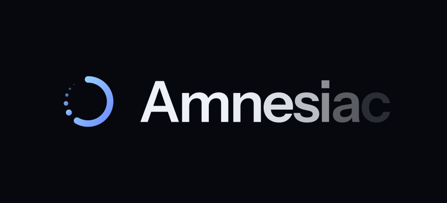

Start Fresh
Amnesiac
Reset any pre-installed app on your Mac or PC. Wipe save data, reclaim space, and restore default settings—without touching anything else.
Works with any pre-installed app that comes with macOS and Windows.
How it works
-
Scan & Discover
Amnesiac finds all pre-installed apps on your computer and shows you which ones have data to reset.
-
Choose & Customize
Select exactly which apps and data you want to reset. You're always in control of what gets wiped.
-
Reset & Restart
Instantly reset your apps to factory defaults. Everything else on your computer remains untouched.
Why use Amnesiac
Beat the Challenge
Replay built-in games from the beginning. Experience them fresh without previous progress haunting your score.
Reclaim Space
Pre-installed apps accumulate cached data and saves over time. Clearing them frees up disk space quickly.
Restore Defaults
Reset configurations and preferences to their original state. Perfect for fixing corrupted settings or starting over.
Safe & Selective
Only affects pre-installed apps. Your personal files, documents, and photos remain completely safe.
One-Click Simplicity
No technical knowledge required. Intuitive interface makes resetting apps as simple as a few clicks.
Precise Control
Choose individual apps or batch reset multiple apps at once. You decide exactly what gets reset.